| Topic |
Notes |
Knowledge Review |
| 1. Introduction to JavaScript |
JavaScript is a programming language that is used to create interactive elements, like buttons that perform taks, pop-ups that take inputs, and even animations and games. |
|
| 2. Basic Output |
alert() - A built-in JavaScript function that displays pop-ups when executed. Message is writen in the brackets of the alert function with quotations
Example = alert("Ez pez lemon squeezy XD");
document.write() - Another built-in JavaScript function that allows you to write directly to a web page, where document refers to the webpage itself and .write() is the function we call. Yet again the brackets are usd to provide a message to be displayed in quotations.
Example = document.write("I am text.");
console.log() - Another built-in JavaScript function that outputs information to the web developer console. Sometimes programmers will use
this while they are trying to debug programs, but a typical web-user will not see these messages.
Example = console.log("Hello Log.")
|
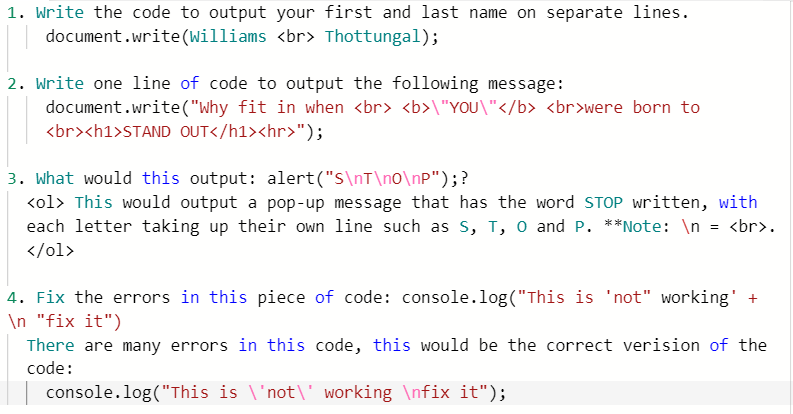
|
| 3. Variables |
A variable is a named memory allocation that stores a value.
Four main types of data:
| Type |
Used to Represent |
| Number |
Stores both integer and floating point(decimal) numbers. |
| String |
Stores one or more characters in a sequence. |
| Boolean |
Stores a value of true or false. |
| Object |
A more complex data type that contians a collection of properties. |
A variable should be declared with a var statement that includes the identifier.
Identifier Example - var result = 5; "result" is the identifier and the value of 5 is stored within the computer's memory
Multiple definition statements can be put on the same line. Ex: var result, myName, myAge;
A constant is a named memory location which stores a value that cannot be changed at run time from its initial assignment.
Constant Example = const PI = 3.14159;
All JavaScript variables must be identified with unique names. These unique names are called identifiers. Here are the general rules for ocnstructing names for variables:
Names can contian letters, digits, underscores, and dollar signs (no other special characters).
Names must begin with a letter
Names can also begin with $ and _ (but let's not, for now)
Names are case sensitive (y and Y are different variables)
Key words such as var, const, console, log cannot be used as names
As a matter of good programming style variables should be written in camelCase and constants should be written in with capitalized letters.
Variables = myNum, firstName, areaRectangle; Constants = PI, FIRSTNAME, LASTNAME;
To receive data from users, a prompt would be a good way of doing this: A prompt would look like this: variableIdentifier = prompt("Message:");
If the program expects a numerical value for a certain variable, yet the user inputs a string of letters - the calculations will result in a NaN(Not a Number).
Converting Between Data Types
JS chooses the data type for when you first assign a value, hence errors can result in wrong data types such as numbers being assumed as strings
The way that this can be accomplished is through the numbers and string conversion method:
var num1 = Number(num1); // this will make the variable of num1 into a number value
var str1 = String(str1);// this will make the variable of str1 into a string value
|
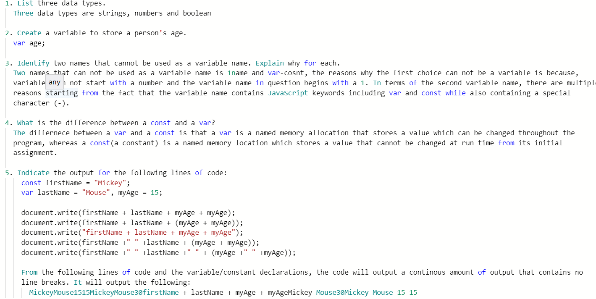
|
| 4. Math Operations |
| Symbol |
Operation |
Example |
| + |
Addition |
result = a + b; (result will now store the sum of the values of a and b) |
| - |
Substraction |
result = a - b; (result will now store the difference of the values of a and b) |
| * |
Multiplication |
result = a * b; (result will now store the product of the values of a and b) |
| / |
Division |
result = a / b; (result will now store the quotient of the values of a and b) |
| % |
Modulus |
result = a % b; (result will now store the remainder of a divided by b) |
| ** |
Exponentiation |
result = a ** b; (result will now store a to the power of b) |
| ++ |
Increment |
b++; (the value of b will increase by 1); equivalent to b=b+1 |
| -- |
Decrement |
b--; (the value of b will decrease by 1); equivalent to b=b-1 |
| Constant or Function |
Purpose |
Example |
| Math.PI |
Gives you the value of PI |
Returns the value 3.14159265... |
| Math.round() |
Rounds a number to the nearest whole number |
Math.round(5.6) returns 6 |
| Math.pow() |
Calculates a power |
Math.pow(3,2) returns 4 |
| Math.sqrt() |
Calculates a square root |
Math.sqrt(16)returns 4 |
Math.ceil
Math.floor() |
Math.ceil() rounds the number up
Math.floor() rounds the number down |
Math.ceil(5.8) returns 6
Math.floor(5.8) returns 5 |
| Math.random() |
Calculates a random number between 0 and
less than 1. Can be used to make any range
of random numbers. |
Math.random() generates a random between 0-1 (decimals included) |
How to generate a random integer from 1-10:
Math.floor(10*Math.random()+1)
|
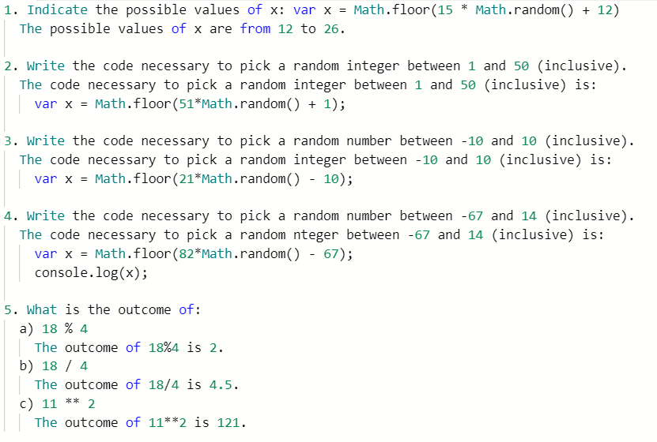
|
| 5. Selection |
Decisions in programs are often made through the selection program of if/else statements. It controls whether if a condition is evaluated between either true or false, it will complete the assigned statements.
The general form of the if/else statement takes the form of:
if (boolean condition) {
statements to be executed;
}
Comparisons are made using operators to check a condition:
| Operator |
Example |
Result |
| == |
a==b |
True if a is equal to b and false otherwise |
| === |
a===b |
True if a has an equal value and equal type to b and false otherwise |
| != |
a!=b |
True if a is NOT equal to b and false otherwise |
| < |
a < b |
True if a is less than b |
| <= |
a <= b |
True if a is less than or equal to b |
| > |
a > b |
True if a is greater than b |
| >= |
a >= b |
True if a is less than or equal to b |
if(condition) {
block of code to be executed if the condition is true
} else {
block of code to be executed if the condition is false
}
var age = prompt("Enter your age:");
if (age<18) {
greeting = "Hello young one";
} else {
greeting = "Ready to vote?"
}
Nested If/Else Statements
If the if/else statement has more than two choices a nested else if statmeent is needed with the "else if" statement
Logical Operators: And, Or, Not
| Operator |
Description |
Example |
| && |
and |
(x < 10 && y > 1), valid values for this condition are x have to be less than 10 and y has to be greater than 1 |
| || |
or |
(x == 5 || y == 5), valid values for this condition are that either x has to equal 5 or y has to equal to 5 |
| ! |
not |
!(x == y), valid values for this condition are that x can not equal y |
|
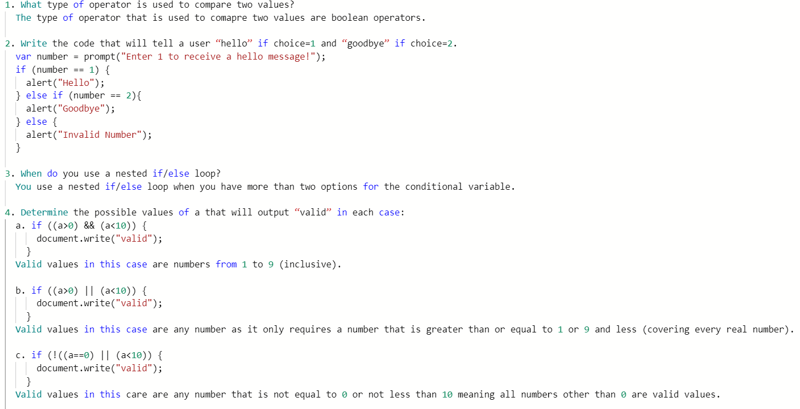
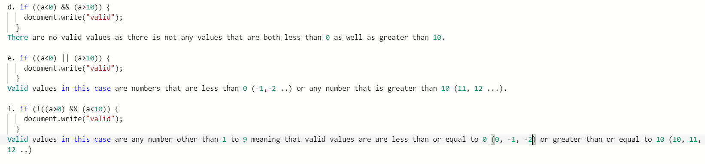
|
| 6. JavaScript Review #1 |
1. Indicate the output of: var y, z; y=2; z=3;
document.write(y +" + "+z+" is "+y+z);
document.write(y+" + "+z+" is "+(y+z));
The outputs of said code would be: 2 + 3 is 232 + 3 is 5
2. What is the difference between a variable and a constant? Give an example of how you would define one of each in JS.
A variable can change throughout the program, whereas a constant is defined as value that remains the same throughout the program:
var myVaraible;
const MYCONST = "5";
3. What is the difference between the data type Number and String? Give an example of each.
Number store numbers - integers or real
var x = 5;
String stores any combiantion fo characters (including numbers)
var x = "5";
4. Indicate an appropriate variable name and write a definition statement with an appropriate value for each variable:
a. A person's name: var name = "Mickey";
b. A person's social insurance number: var sin ="345 555 434"
c. A person's bank account total: var bankTotal = 45.64;
d. A person's age: var age = 6;
e. A decision to play again: var playAgain = "yes";
5. How do you collect user input? Write the JS statement to collect the user’s response to a question.
var response = prompt(“Enter stuff here”);
6. Identify two identifiers that cannot be used as a variable name. Indicate why.
var, if, else, prompt, Math, – because you cannot use keywords as a variable name
my num, #num – no special character such as spaces, #,/, * …
2x – can’t start with a number x2 is fine
should make sense and use camelCase
7. This script isn’t working. It always seems to output “no” – what is wrong with it? (min 2 errors)
The reason why the script is not working was because the code was missing the Number data type converter which meant that all answers would initialize as strings rather than the intended number inputs, other than that the if conditional statement had a curly bracket to close up the document.write parameter.
8. Write a program that will change a user entered number of minutes into hours and minutes. Example: if the user enters 128 min, the program will display 2 hours and 8 minutes.
var fullMinutes = Number(prompt("Enter the number of minutes"));
var hours = Math.floor(fullMinutes/60);
var minutes = fullMinutes%60;
document.write(fullMinutes + " is " + hours + " hours, and " + minutes + "minutes.");
9. Write the code necessary to pick a random integer between 12 and 22 inclusive.
Math.floor(11*Math.random()+12) or Math.round(10*Math.random()+12)
Write the code necessary to pick a random integer between -5 and 2 inclusive.
Math.floor(8*Math.random()-5) or Math.round(7*Math.random()-5)
11. What is the outcome of:
a) 25 % 4 =1
b) 25/4 =6.25
c) 14%2 =0
d) Number(6 * Math.random() +8) –random numbers between 8 up to 14 (not including 14)
12. Write a program to calculate the roots of a quadratic equation. You will need to take in a, b and c. Determine if the equation has 1 root, 2 roots or no real roots. If it has real roots calculate and display the results.
var a, b, c, D, r1, r2;
a = prompt("Enter your a value");
b = prompt("Enter your b value");
c = prompt("Enter your c value");
D = b*b -4*a*c;
if (D==0) {
r1 = -b/(2*a);
document.write("One root: " + r1)
} else if (D>0) {
r1 = (-b + Math.sqrt(D)/(2*a))
r2 = (-b - Math.sqrt(D)/(2*a))
document.write("Two roots: " +r1 + " and " + r2);
} else {
document.write("No real roots");
}
13. Write a program that will determine a person’s age based on their birthdate.
const YEAR = 2021;
const MONTH = 3;
var age;
var year = prompt("Enter year of birth");
var month = prompt("Enter month of birth (1-12)");
var day = prompt("Enter day of birth");
if (MONTH == month) {
if (DAY >= day) {
age = YEAR - year;
} else {
age = YEAR - year -1;
}
} else if (MONTH < month) {
age = YEAR - year -1
} else {
age = YEAR - year;
} alert("You are " +age + " year olds");
|
2012 Candian Computing Contest: Problems 1 & 2
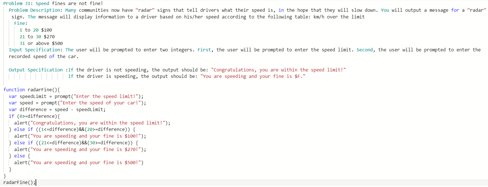
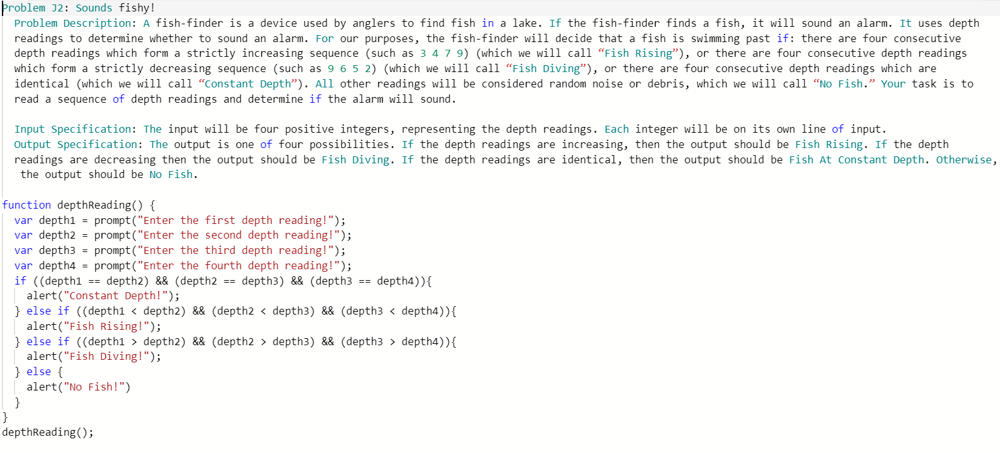
|
| 7. Functions and Forms |
A function is a block of code that performs a specific task. We have already made use of some built in functions such as alert, prompt, Math.floor and others.
Examlpe: function functionName(parameters){
code to be executed
}
Data is given, or passed, to a function through parameters. A variable or value passed to a function is called an argument .
Example : function alert(message) {code to make a box pop up with a message} - In this function alert is the function name and message is the parameter of alert. If the parameter of message took the form of "Hey what is up?" - that would be considered as the argument.
In the math library we have many pre-built functions including Math.floor and Math.random - the usage of floor and random are functions that come from a class called Math (a storage unit almost).
For functions to be executed they need to be called, meaning that at the end of the aforementioned function you need call it by adding the function to an output type such as document.write(functionName()) or alert(functionName()).
|
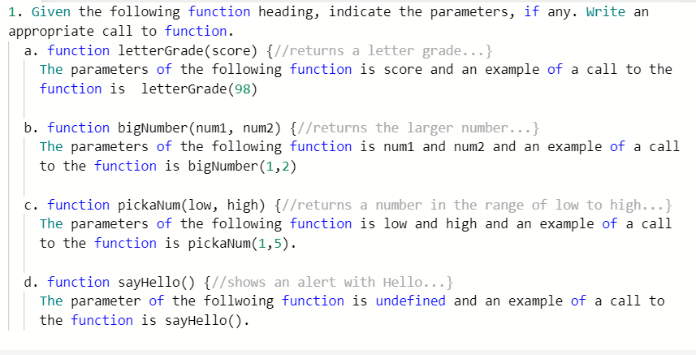
|
| 8. Strings |
Recall that a String is a variable-type that stores a sequence of characters. Javascript includes several built-in
functions for working with strings. The following is a list of some string functions available in JS.
In Javascript, every character in a String can be referred to with an index, with the first character having an
index of 0. For example, in the String “ICS20”, the character ‘C’ would have an index of 1, and 'I' would have the index of 0.
In addition, all String functions return a new string and do not modify the original variable. Formally, we
then say that Strings are immutable, meaning they cannot be changed directly through a function.
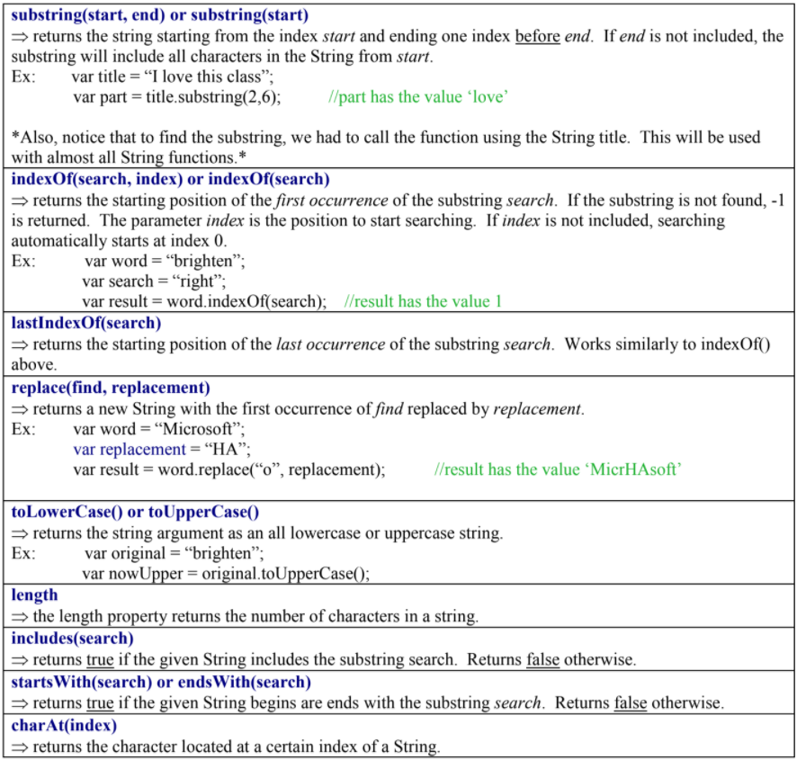
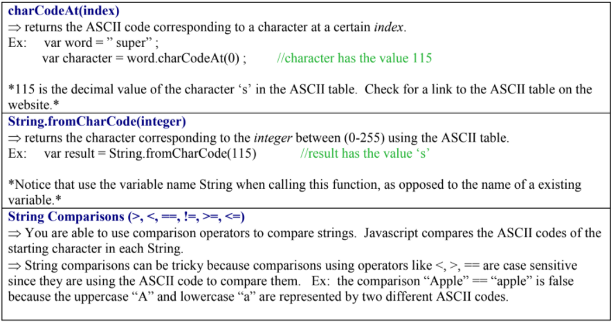
|
|
| 9.For Loops |
The for statement is a looping structure that executes a set of statements a fixed number of times. In computer
science, this is known as iteration. The for statement executes until a counter reaches an ending value. The for
statement takes the following form:
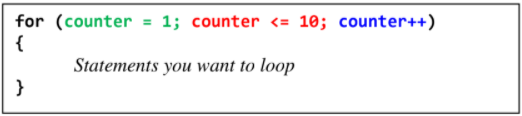
There are 3 main parts of a for loop:
1. Initialization - the counter variable used to count the loop is set to an initial value. This can be set with a
value or a variable.
2. Boolean Expression - controls the loop by testing the counter variable. If the expression is true, the loop
runs again, if the expression is false, the loops stops running.
3. Modifier - this statement changes the counter variable after the statements in the loop finish. counter++
has the same effect as counter = counter + 1.
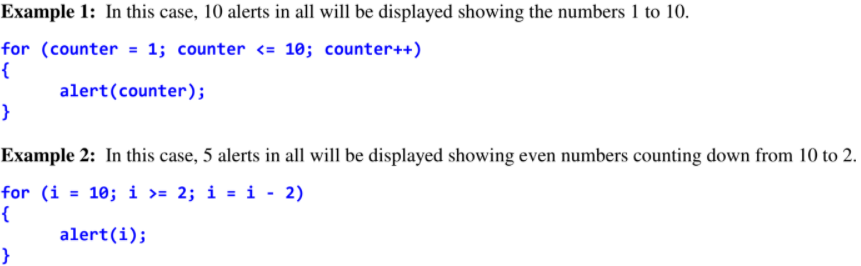
INFINITE LOOPS
The condition of a loop is used to determine when the loop should stop executing. A for loop continues until its condition
is false. What happens, though, if the condition never becomes false? The result is an infinite loop - one which continues
forever.
A logic error can lead to an infinite loop. For example, the following statements create an infinite loop. Can you see why? PSSSST.... its cuz the initial value (i) is initially bigger than the boolean expression, making it true. The modifier makes the initial value go up by +1, meaning 'i' will always stay being bigger than 2 no matter how many times it loops.
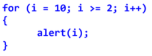
ACCUMULATOR PATTERN
Sometimes when we are iterating through a sequence of numbers, it can be useful for us to count something. The
accumulator pattern allows us to keep a ‘running total’ as a loop runs. To do this, we must initialize a variable outside of
the loop that will store the sum. As the loop runs, we will increment that sum as needed. After the loop finishes, it will
store the result of our counting.
Here is an example:
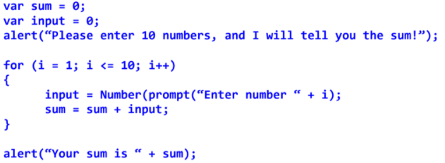
|
|
| 10. While Loops |
The while statement is a looping structure that executes a set of statements while a boolean expression is true. If the expression is false, the loop is exited. The boolean expressions is checked before the statements in teh loop execute. The while sttement takes the following form:
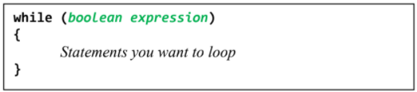
The do-while statement is a statement, except that the boolean expression is checked after the statements in the loop execute. Also, a semi-colon is included after the while statement in a do-while loop. The do-while statment takes the following form:
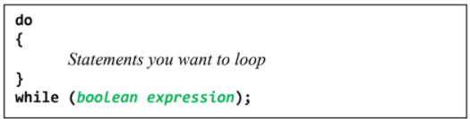
Example of while and do-while loops accomplising the same proram of creating 10 alerts displaying the numbers from 1 to 10
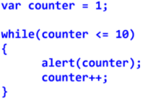
Variables must be declared before the loop is created, This is because any variable you create inside of the loop cannot be checked in the while condition.
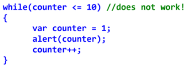
Infinite loops can be created in while and do-while loops as when a variable is initialized and the condition of the while will always be met from a non-changing variable to an incrmeentation or decremenatation that has no effect on the condition.
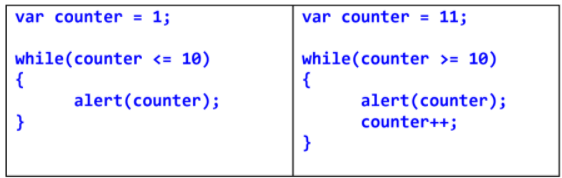
The sentinel pattern in computer science is used to determine when a loop will terminate (stop iterating). The sentinel value is a variable that is used to accomplish this. A certain value (true/false) will indicate the loop should continue to run. When the sentinel value changes, the loop will terminate. The sentinel value changes when the loop has accomplished the particular task it is being used for.
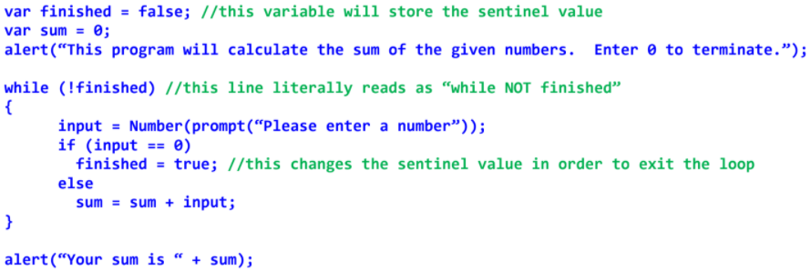
When using loops, a useful skill is to be able to loop as it runs. This means keep track of values elevant to the loop as they chang eto help undetrstand how the loop is working. Here is an example:
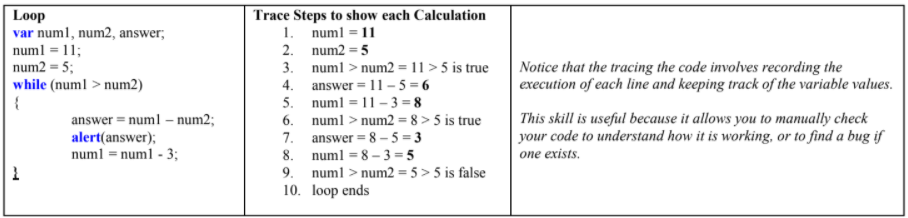
|
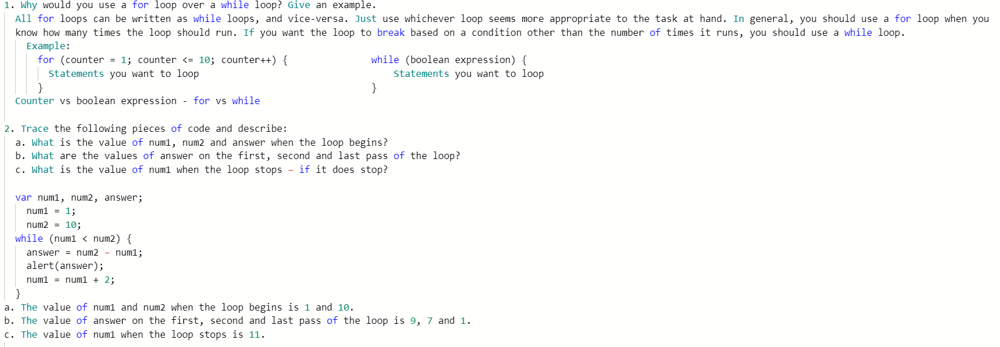
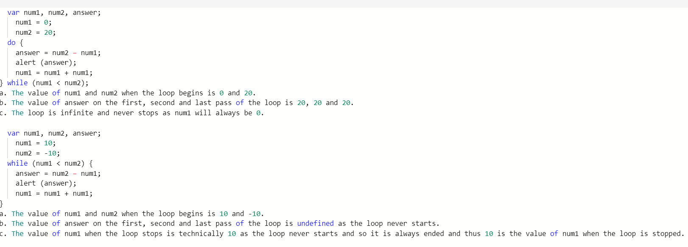
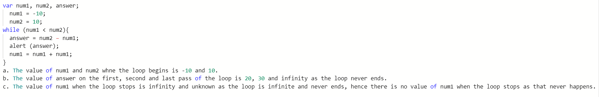
|
| 11. JavaScript Review #2 |
1. Be able to use the String Functions. You do not have to memorize them, you can use the sheet on the test - however you must be able to use them and understand what they do. To practice, write the segment of code that will perform each task:
a. Output the 2nd character of a word - so “ICS2O” would output “C”
var word = prompt("Enter a word and the program will output the second string");
document.write("Your second letter is: " +word.charAt(1));
b. Tell the user if the word has a “M” in it
var word = prompt("Enter a word and the program will indicate whether or not the word contains the letter M");
document.write("The result of the search is: " +word.includes("M"));
c. Output the number of characters in a sentence
var sentence = prompt("Enter a sentence and the program will indicate the amount of characters");
document.write("Your sentence contains: " +sentence.length +" words.");
d. Count the number of “M”s in a sentence
var sentence = prompt("Enter a sentence and the program will indicate the amount of characters");
count = 0;
for (i=0; i < sentence.length; i++;)
if (sentence.charAt(i) == "m" || sentence.charAt(i) == "M") {
count ++;
}
document.write("Your sentence contains: " +count +" Ms.");
e. Remove the first and last letter of a word --- so “apple” becomes “ppl”
var word = prompt("Enter a word and the program will remove both the first and last letters!")
var newWord = word.substring(1,word.length-1);
document.write("Your new word with the first and last letter removed is: " +newWord;)
f. Replace the first and last letter of a word with a # --- so “apple” becomes “#ppl#”
var word = prompt("Enter a word and the program will replace the first and last letter with a #");
var newWord = "#" + word.substring(1, word.length-1) + "#";
document.write("Your new word with the #s is: " +newWord);
2. Write a loop to output the following sequence of numbers:
a. 5, 7, 9, 11,13, 15
var numberSequence = " ";
for(i=5; i <= 15; i=i+2;){
numberSequence +=i + ",";
}
document.write("The number sequence is: " + numberSequence.substring(0,numberSequence.length-1));
b. 100, 95, 90, ...10, 5, 0
var numberSequence = " ";
for(i=100; i >= 0; i=i-5;){
numberSequence +=i + ",";
}
document.write("The number sequence is: " + numberSequence.substring(0,numberSequence.length-1));
c. 3, 9, 27, 81, 243, 729
var numberSequence = " ";
for(i=3; i <= 729; i=i*3;){
numberSequence +=i + ",";
}
document.write("The number sequence is: " + numberSequence.substring(0,numberSequence.length-1));
3. Write a loop that will continue to run until a user enters 0.
var input;
do {
input = prompt("Enter any number and enter a 0 to exit the loop");
} while (input != 0);
4. Write a function called “generateLetter” to generate a random capital letter. (In the Ascii code - Capital letters start with A=65).
function generateLetter() {
var letter = Math.floor(26*Math.random()+65);
alert(String.fromCharCode(letter));
}
generateLetter();
5. Write a function called “generatePassword” that will call your function “generateLetter” 5 times to generate a random 5 character password.
function generateLetter() {
var r = Math.floor(26*Math.random()+65);
return String.fromCharCode(r);
}
function generatePassword(num){
var password ="";
for(x=1; x<=num; x++){
password+=generateLetter();
}
return password;
}
var myPassword = generatePassword(5);
console.log("Your new password is: " + myPassword);
6. Write a function called “checkPassword” that will determine if a user entered value matches the generated password.
function generateLetter() {
var r = Math.floor(26*Math.random()+65);
return String.fromCharCode(r);
}
function generatePassword(num){
var password ="";
for(x=1; x<=num; x++){
password+=generateLetter();
}
return password;
}
var myPassword = generatePassword(5);
console.log("Your new password is: " + myPassword);
function checkPassword(guess, password){
if(guess==password){
console.log("Password correct");
} else {
console.log("Password does not match");
}
}
var userPass = prompt("Enter your Password");
checkPassword(userPass, myPassword);
7. What is a parameter?
A parameter is what a function needs to run - it is useful to pass in the values it needs in the function call.
8. What does the return statement do? Can a function have multiple return statements?
A return statement sends info back to the calling function/statement. A function can have mulitple returns however only one of them will be executed.
9. Write a function that takes in a word and a character and returns a new word that is the character repeated the same number of times as the length of the word. Example calls: createWord(“hello”, “&”) would create “&&&&&” or createWord(“cat”, “-”) would create “---”.
function createWord(word, char){
var newWord ="";
for(i=0; i < word.length; i ++){
newWord +=char;
}
return newWord;
}
console.log("Your new word is: " + createWord(prompt("Enter a word"), prompt("Enter a character")));
|
|
| 12. Arrays |
A variable array stores a set of variables that each have the same name and are all of the same type. Each variable of an array is called a member or element, and is identified by a number called the index. Arrays are visualized as so:
| Index |
0 |
1 |
2 |
3 |
4 |
5 |
| Name (Element) |
John |
James |
Jacob |
Joseph |
Jonah |
Johannes |
By creating a variable you can create a new array with amounts of elements placed: var students = new Array(6) - would create 6 elements in students and therefore you could set an index to the variable and enter in string values. For example student at index 0 or students[0]="Ian".
By the same logic you could output a certain element or the whole array (using the .length substring) by calling it.
For loops can be utilized in a manner so that set variable arrays can take in input through prompts until the index count is met - this same input can be displayed in outputs on the webpage using document.write:
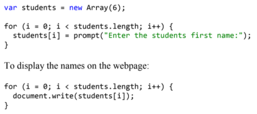
|
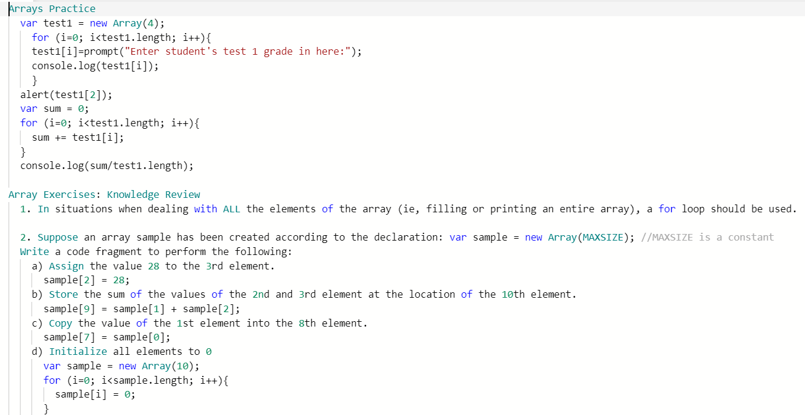
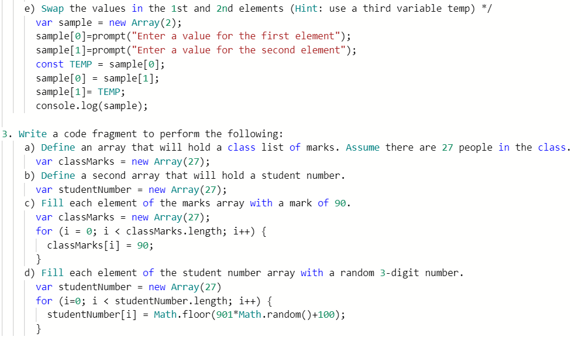
|